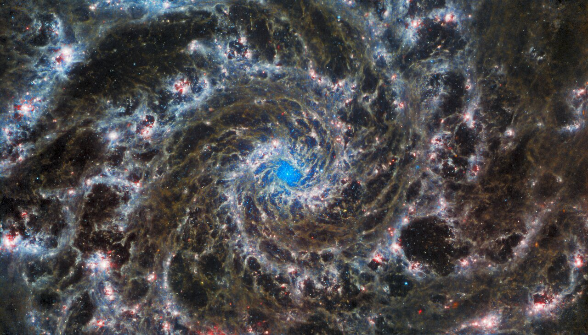
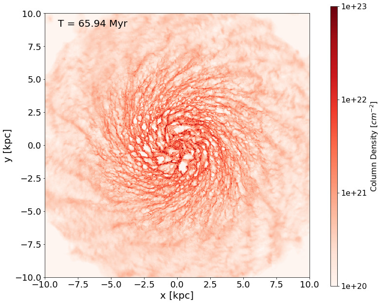

Research
Utilising 3D Magnetohydrodynamical Simualtions to Study Magnetism in Star Formation
Lodewijk Woltjer, 1967
The argument in the past has frequently been a process of elimination: one observed certain phenomena, and one investigated what part of the phenomena could be explained; then the unexplained part was taken to show the effects of the magnetic field. It is clear in this case that, the larger one's ignorance, the stronger the magnetic field.
There's a whole host of unanswered questions in astrophysics, including three big 'origin' questions; how did the Univrse begin, how are galaxies assembled, and how do stars form? A big priority in my own research work is to help answer that third question. You can read more about my work so far below, and of course if you have any questions you're welcome to get in touch!
What's The Problem?
 NASA, ESA, CSA, JUDY SCHMIDT We have been studying stars for a long, long, time, and we're still not precisely sure how they got there. If we want to understand star formation better, one approach is to study the Interstellar Medium, or 'ISM', the vast space between stellar systems in which new stars are born. This environemtn is made up of a bunch of different ingredients, such as gas, dust, magnetic fields and interstellar radiaition. When you look at a typical image of a galaxy, the bulk of what you're seeing is the ISM, and yet there are many things about the ISM that we're still not sure about! Not least of these is the role of magnetic fields. How much of an impact are these having on star forming environments? How much does that impact change between small and large sclaes? Part of the reason why we're still trying to get concrete answers to these questions is because magnetic fields have historically been troublesome to observe, even indirectly - indeed, even simulating them accurately still poses difficulties. In my research, I run cutting edge 3D high-resolution simulations of isolated galaxies with the Arepo code. By creating both a magnetised and a purely hydrodynamic simulation of the same system, I'm able to decipher the precise impact of magnetic fields in this enigmatic process of forming stars.
What Is Being Simulated?
 Caption for my own image? A galaxy! Previous work by academics in this field has shown that the galactic environment has a profound effect on the sites of star formation, even though star formation itself is occuring on much smaller scales. The system is interlinked, so in order to study star formation as accurately as possible, we need to incorporate the whole galactic environment. The huge range of scales involved here however pose a problem; how can we simulate star formation with sub-parsec resolution, throughout an entire galaxy, kiloparsecs in size? This is where Arepo's ability to adaptively vary it's spatial resolution comes in. To run a simulation with super-high resolution across the entire galaxy would be unfeasible, it would take too much time to run, and it would also be uneccesary. Within the galaxy, there are regions of high density, with lots of important activity on small scales, and regions of low density, where there aren't any signficant changes on these scales. In order to increase computational efficiency, Arepo is able to automatically increase the resolution in areas of high density, while similtaneously allowing low density regions to stay or even derefine to lower resolutions. To get thorough and trustworthy results from these simularions, we must also incorporate important physics that affect the galaxies evolution. For this reason, we include;
- Self gravity
- Sink particles for star formation (representing small clusters, not individual stars)
- Time dependent chemistry for H and CO (Glover & Clark 2012)
- Supernovae feedback, which is tied to the sink particles


What Can We Do With This Data?
With the above simulation, we can already do a lot of interesting science, but, as mentioned previously, we are also running an analogous simulation with no magnetic fields present, allowing a comparison of the molecular clouds formed with and without magnetic fields. We are especially interesting in comparing the HD and MHD simulations; the analysis tools necessary for this process have already been developed, so results should be ready soon! Our initial goals are threefold;
- Firstly, we will investigate the importance of fields in shaping the formation of clouds by studying the correlation between the alignment of the magnetic field and molecular and atomic gas. This will be achieved using the Histogram of Relative Orientations (HRO) technique showcased in Soler et al. 2013. The link between atomic and molecular gas will then be investigated using Histograms of Gradients (HOGs) (Soler et al. 2019).
- Secondly, we will scrutinise the impact of the magnetic fields on the star formation history of the galaxy as measured by sink particles, and investigate if the fields change the distribution of where stars are formed.
- Thirdly we will compare the mass, sizes and gravitational binding of the molecular clouds formed with and without magnetic fields.